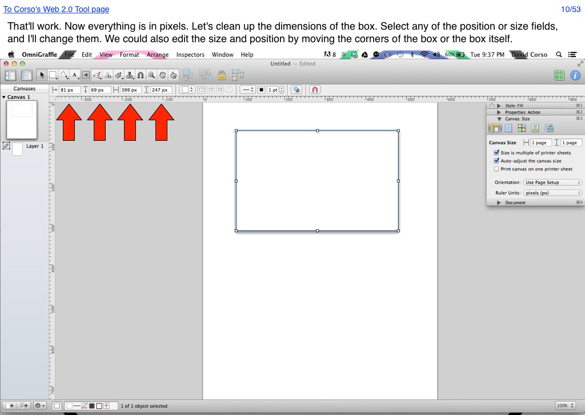

<map name="GraffleExport">
	<area shape=rect coords="5,7,194,24" href="http://66.147.244.111/~immunisg/ET703/CorsoGraphics/Web2.0Tool/WebTool.html">
	<area shape=rect coords="978,7,1017,24" href="53.html">
	<area shape=rect coords="264,151,304,162" href="11.html">
	<area shape=rect coords="210,151,250,162" href="11.html">
	<area shape=rect coords="156,151,196,162" href="11.html">
	<area shape=rect coords="102,151,142,162" href="11.html">
</map>

